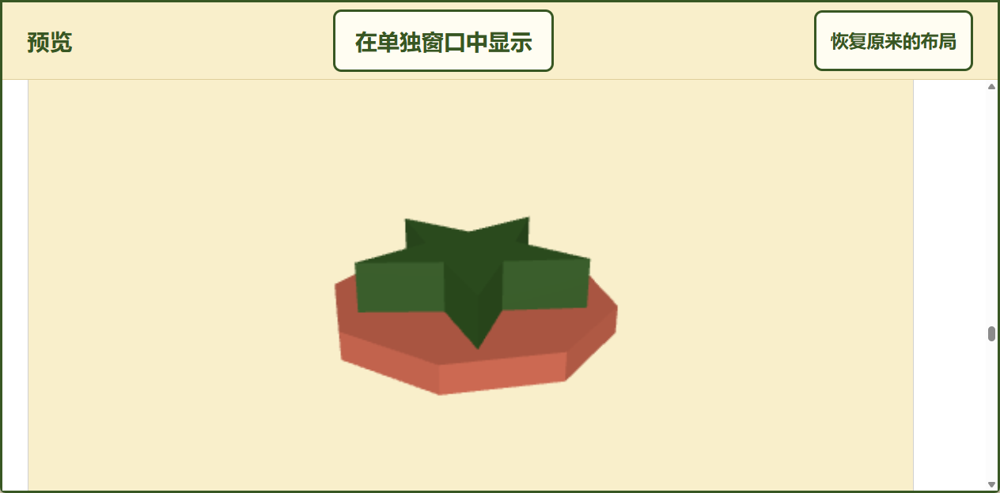
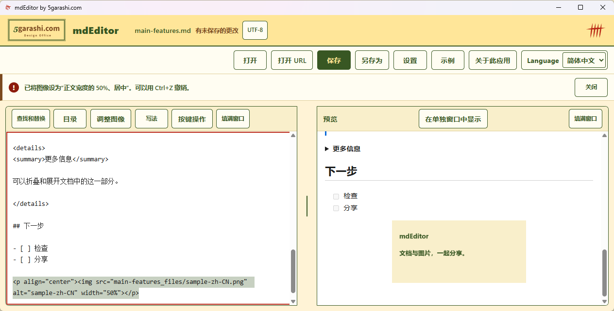

图表、3D、视频。
从一份 Markdown 文档开始。
本次更新（1.0.20）
把 PDF 和 Word 作为 Markdown 打开。AI 聊天回答的格式问题也会自动修正。可以一键保存与预览一致的 PDF。
一边编写，一边实时预览。离线显示 Mermaid、Graphviz、公式、3D 模型和地图。波浪线标出 Markdown 语法问题，Ctrl+Shift+W 对齐表格列。
仅支持 Windows，免费。PDF 导入会尽量转换，分栏排版和扫描 PDF 无法还原。AI 聊天回答会尽量还原。使用源代码构建版 1.0.20 录制。 开发和视频制作使用了 AI 辅助（Claude、Codex）。背景音乐由 Codex 作曲并生成音源。

观看实际操作
从旋转的 3D 模型开始，从上到下浏览 diagram-test，再演示主要功能，包括拖放图片、设为正文宽度的 50% 并居中。
播放后有背景音乐，可暂停并调整音量。
Music: Light Steps — 5garashi.com Design Office / Codex, CC BY 4.0 (excerpt repeated, ending fade).
Sample film: Big Buck Bunny © 2008 Blender Foundation, CC BY 3.0. https://bigbuckbunny.org/
Maps: © OpenStreetMap contributors.
20 项主要功能
- 把 PDF 和 Word 作为 Markdown 打开，在电脑中转换
- 从 PDF 提取标题、列表、表格、代码和图片
- 一键保存为 PDF，外观与预览一致
- 也可保存为 Word、HTML、PNG、CSV、JSON、文本或 ZIP
- 边写边在旁边查看效果，滚动同步
- 尽量还原 AI 聊天的 Markdown
- 预览可放到第二个显示器上，跟随正在编辑的行
- 输入时着色显示，写法错误加上波浪线
- 一个键设置粗体、斜体、列表、表格和标题编号
- 离线显示 Mermaid、Graphviz 图表和公式
- 离线显示 3D 模型（STL）和地图（GeoJSON）
- 约 40 种语言的代码着色，并可根据标题生成目录
- 与 GitHub 相同的提示框、前置元数据和折叠
- 也可打开 HTML、电子邮件、CSV、JSON、Jupyter Notebook 和图像
- 图片拖放或粘贴即可放入文档
- 复制后按一个键，即可作为新文档打开
- 安全保存，异常退出后自动恢复
- 正确打开 UTF-8、GBK、Shift_JIS 和 EUC-JP 文件
- 没有广告、没有跟踪、不需要账户；网络内容只在允许时加载
- 支持键盘操作、屏幕阅读器、朗读和深色模式
图片大小与位置
